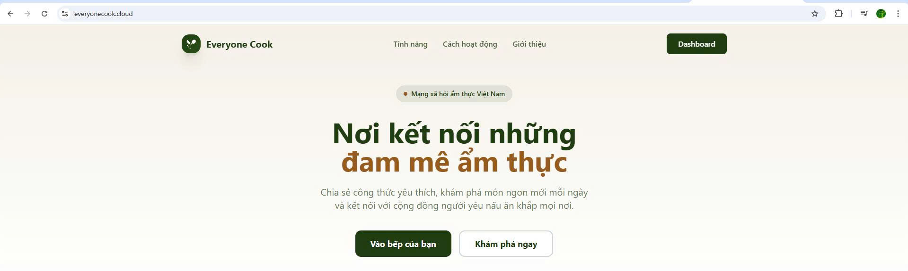

5.4.6 Frontend Stack
Frontend Stack - AWS Amplify Hosting
Tổng quan
Frontend Stack xử lý triển khai ứng dụng Next.js 15 sử dụng AWS Amplify. Khác với các stack khác được quản lý bởi CDK, Frontend được triển khai thông qua Amplify Console với tích hợp GitLab để tự động triển khai.
Phương thức triển khai: AWS Amplify Console (không phải CDK stack)
⚠️ Lưu ý quan trọng: Triển khai Frontend được thực hiện riêng biệt thông qua Amplify Console. Xem chi tiết tại 5.10 Deploy to Amplify.
Trách nhiệm chính
- Host ứng dụng Next.js 15 SSR
- Tự động triển khai từ GitLab repository
- Cấu hình custom domain với Route 53
- Tự động cấp chứng chỉ SSL qua ACM
- Phân phối CDN toàn cầu
- Quản lý biến môi trường
Stack này bao gồm
Ứng dụng Next.js:
- Framework: Next.js 15 với React 18
- Rendering: Chế độ standalone output (SSR)
- Styling: Tailwind CSS + Flowbite components
- State Management: React Context API
- Authentication: AWS Amplify Auth (tích hợp Cognito)
Tính năng AWS Amplify:
- Tự động build và deploy từ Git
- Hỗ trợ server-side rendering (SSR)
- Custom domain với HTTPS
- CDN caching và compression
- Injection biến môi trường
- Tích hợp GitLab CI/CD
Kiến trúc
┌─────────────────────────────────────────────────────────────────┐
│ GitLab Repository │
│ (everyonecook/frontend) │
│ │
│ Push to main/dev branch │
└──────────────────────────┬──────────────────────────────────────┘
│ Webhook Trigger
▼
┌─────────────────────────────────────────────────────────────────┐
│ AWS Amplify (Hosting + CI/CD) │
│ │
│ ┌──────────────────────────────────────────────────────────┐ │
│ │ Build Pipeline (Tự động kích hoạt) │ │
│ │ 1. Clone repository từ GitLab │ │
│ │ 2. npm install (với legacy peer deps) │ │
│ │ 3. Inject biến môi trường → .env.production │ │
│ │ 4. npm run build (Next.js standalone build) │ │
│ │ 5. Deploy to Amplify CDN │ │
│ └──────────────────────────────────────────────────────────┘ │
│ │
│ ┌──────────────────────────────────────────────────────────┐ │
│ │ Cấu hình Hosting │ │
│ │ • CDN Distribution (CloudFront) │ │
│ │ • SSR Lambda@Edge functions │ │
│ │ • Custom domain: dev.everyonecook.cloud │ │
│ │ • SSL Certificate (ACM - tự động cấp) │ │
│ │ • Custom headers (bảo mật) │ │
│ │ • Custom rewrites (Next.js routing) │ │
│ └──────────────────────────────────────────────────────────┘ │
└──────────────────────────┬──────────────────────────────────────┘
│
▼
┌─────────────────────────────────────────────────────────────────┐
│ Route 53 (DNS) │
│ dev.everyonecook.cloud → A Record → Amplify CDN │
│ www.dev.everyonecook.cloud → CNAME → Amplify CDN │
└─────────────────────────────────────────────────────────────────┘
│
▼
┌─────────────────────────────────────────────────────────────────┐
│ End Users (Global) │
│ Truy cập qua: https://dev.everyonecook.cloud │
└─────────────────────────────────────────────────────────────────┘
Cấu hình Frontend
Cấu trúc thư mục
frontend/
├── amplify.yml # Cấu hình build Amplify
├── next.config.js # Cấu hình Next.js
├── package.json # Dependencies & scripts
├── .env.example # Template biến môi trường
├── app/ # Next.js App Router
│ ├── layout.tsx # Root layout
│ ├── page.tsx # Home page
│ ├── auth/ # Trang xác thực
│ ├── profile/ # Hồ sơ người dùng
│ ├── recipes/ # Trang công thức
│ └── ...
├── components/ # React components tái sử dụng
├── contexts/ # React Context providers
├── hooks/ # Custom React hooks
├── lib/ # Utility functions
├── services/ # API service layer
└── types/ # TypeScript definitions
1. Cấu hình Amplify Build
File: amplify.yml (thư mục gốc)
⚠️ Quan trọng: Amplify sử dụng file amplify.yml ở thư mục gốc repository, không phải trong thư mục frontend/.
version: 1
applications:
- frontend:
phases:
preBuild:
commands:
- export HUSKY=0
- npm install --legacy-peer-deps --ignore-scripts
build:
commands:
- echo "=== Creating .env.production from Amplify env vars ==="
- rm -f .env.production
- env | grep -e NEXT_PUBLIC_ > .env.production || true
- echo "=== .env.production content ==="
- cat .env.production
- echo "=== Building frontend ==="
- npm run build
artifacts:
baseDirectory: .next
files:
- '**/*'
cache:
paths:
- node_modules/**/*
- .next/cache/**/*
appRoot: frontend
Cấu hình bổ sung trong frontend/amplify.yml:
File frontend/amplify.yml chứa các security headers và custom rewrites bổ sung (có thể merge vào amplify.yml gốc nếu cần):
customHeaders:
- pattern: '**/*'
headers:
- key: 'Strict-Transport-Security'
value: 'max-age=31536000; includeSubDomains'
- key: 'X-Content-Type-Options'
value: 'nosniff'
- key: 'X-Frame-Options'
value: 'DENY'
- key: 'X-XSS-Protection'
value: '1; mode=block'
customRules:
# Xử lý dynamic routes [id] - rewrite các request không phải file về Next.js
- source: '</^[^.]+$|\.(?!(css|gif|ico|jpg|jpeg|js|json|png|txt|svg|woff|woff2|ttf|map|webp|avif)$)([^.]+$)/>'
target: /index.html
status: '200'
# Bảo toàn static assets
- source: '/_next/<*>'
target: '/_next/<*>'
status: '200'
- source: '/api/<*>'
target: '/api/<*>'
status: '200'
Điểm chính:
appRoot: frontend: Source code trong thư mụcfrontend/- Build artifacts: Thư mục
.next(Next.js standalone build) - Root
amplify.yml: Chỉ cấu hình build - Frontend
amplify.yml: Bao gồm security headers + custom rewrites - Khuyến nghị: Merge customHeaders và customRules vào root
amplify.ymlđể cấu hình tập trung
2. Cấu hình Next.js
File: frontend/next.config.js
/** @type {import('next').NextConfig} */
const nextConfig = {
reactStrictMode: true,
// Output mode cho Amplify SSR deployment
output: 'standalone',
// Tối ưu hiệu năng
poweredByHeader: false,
compress: true,
trailingSlash: false,
// Tối ưu hình ảnh
images: {
remotePatterns: [
{
protocol: 'https',
hostname: 'cdn-dev.everyonecook.cloud',
pathname: '/**',
},
],
formats: ['image/avif', 'image/webp'],
deviceSizes: [640, 750, 828, 1080, 1200, 1920, 2048, 3840],
},
// Tối ưu bundle
experimental: {
optimizePackageImports: ['react-icons', 'flowbite-react', 'aws-amplify'],
optimizeCss: true,
},
// Biến môi trường (giá trị dự phòng)
env: {
NEXT_PUBLIC_API_URL: process.env.NEXT_PUBLIC_API_URL || 'https://api-dev.everyonecook.cloud',
NEXT_PUBLIC_CDN_URL: process.env.NEXT_PUBLIC_CDN_URL || 'https://cdn-dev.everyonecook.cloud',
NEXT_PUBLIC_COGNITO_USER_POOL_ID: process.env.NEXT_PUBLIC_COGNITO_USER_POOL_ID,
NEXT_PUBLIC_COGNITO_CLIENT_ID: process.env.NEXT_PUBLIC_COGNITO_CLIENT_ID,
NEXT_PUBLIC_COGNITO_REGION: process.env.NEXT_PUBLIC_COGNITO_REGION || 'ap-southeast-1',
},
};
module.exports = nextConfig;
Điểm chính:
output: 'standalone': Build tối ưu cho Amplify- Tối ưu hình ảnh: Hỗ trợ định dạng AVIF, WebP
- Tích hợp CDN: Load hình ảnh từ CloudFront CDN
- Biến môi trường: Được inject từ Amplify Console
3. Dependencies
File: frontend/package.json
{
"name": "everyonecook-frontend",
"version": "1.0.0",
"scripts": {
"dev": "next dev --turbo",
"build": "next build",
"start": "next start"
},
"dependencies": {
"next": "^15.0.0",
"react": "^18.3.0",
"react-dom": "^18.3.0",
"aws-amplify": "^6.15.8",
"@aws-amplify/auth": "^6.17.0",
"axios": "^1.13.2",
"flowbite-react": "^0.7.0",
"react-icons": "^5.0.1"
},
"devDependencies": {
"typescript": "^5.3.0",
"tailwindcss": "^3.4.18",
"autoprefixer": "^10.4.22"
}
}
Dependencies chính:
- Next.js 15: Framework SSR mới nhất
- AWS Amplify: Authentication & API integration
- Flowbite React: Thư viện UI component
- Tailwind CSS: Framework CSS utility-first
4. Biến môi trường
File: frontend/.env.example
# Cấu hình API
NEXT_PUBLIC_API_URL=https://api-dev.everyonecook.cloud
# Cấu hình CDN
NEXT_PUBLIC_CDN_URL=https://cdn-dev.everyonecook.cloud
# Cấu hình AWS Cognito
NEXT_PUBLIC_COGNITO_USER_POOL_ID=ap-southeast-1_XXXXXXXXX
NEXT_PUBLIC_COGNITO_CLIENT_ID=xxxxxxxxxxxxxxxxxxxxx
NEXT_PUBLIC_COGNITO_REGION=ap-southeast-1
# Môi trường
NEXT_PUBLIC_ENV=development
Quan trọng: Các biến này phải được cấu hình trong Amplify Console > Environment Variables.
Cấu hình Triển khai
Cấu hình Domain
| Môi trường | Frontend Domain | Backend API | CDN |
|---|---|---|---|
| Dev | dev.everyonecook.cloud |
api-dev.everyonecook.cloud |
cdn-dev.everyonecook.cloud |
| Staging | staging.everyonecook.cloud |
api-staging.everyonecook.cloud |
cdn-staging.everyonecook.cloud |
| Prod | everyonecook.cloud |
api.everyonecook.cloud |
cdn.everyonecook.cloud |
Cấu hình Amplify
Cài đặt Build:
- Phiên bản Node.js: 18.x (tự động phát hiện)
- Build timeout: 15 phút
- Build image: Amazon Linux 2023
- Cache: node_modules + .next/cache
Cài đặt Deployment:
- Auto-deploy: Enabled (khi push Git)
- Branch:
main(prod),dev(development) - Build mode: Server-side rendering (SSR)
Tích hợp với các Stack khác
Dependencies
Frontend yêu cầu outputs từ:
-
DNS Stack (Phase 1):
- Route 53 Hosted Zone ID
- Cấu hình tên miền
-
Certificate Stack (Phase 1.5):
- ACM Certificate cho custom domain (CloudFront - us-east-1)
- Amplify sẽ tự động provision certificate
-
Auth Stack (Phase 3):
COGNITO_USER_POOL_ID: User Pool IDCOGNITO_CLIENT_ID: App Client IDCOGNITO_REGION: AWS Region
-
Backend Stack (Phase 4):
API_URL: API Gateway custom domain- Cấu hình API endpoints
-
Core Stack (Phase 2):
CDN_URL: CloudFront distribution domain- S3 bucket cho upload hình ảnh
Cross-Stack References
Frontend sử dụng biến môi trường để kết nối với backend:
// services/api.ts
const API_BASE_URL = process.env.NEXT_PUBLIC_API_URL; // Từ Backend Stack
const CDN_URL = process.env.NEXT_PUBLIC_CDN_URL; // Từ Core Stack
// lib/auth.ts
const cognitoConfig = {
userPoolId: process.env.NEXT_PUBLIC_COGNITO_USER_POOL_ID, // Từ Auth Stack
userPoolClientId: process.env.NEXT_PUBLIC_COGNITO_CLIENT_ID, // Từ Auth Stack
region: process.env.NEXT_PUBLIC_COGNITO_REGION,
};
Quy trình Triển khai
Điều kiện tiên quyết
Trước khi triển khai frontend, đảm bảo các điều sau đã hoàn thành:
- ✅ DNS Stack đã deploy (Route 53 Hosted Zone)
- ✅ Core Stack đã deploy (S3 + CloudFront CDN)
- ✅ Auth Stack đã deploy (Cognito User Pool)
- ✅ Backend Stack đã deploy (API Gateway + Lambda)
- ✅ GitLab repository đã cấu hình
- ✅ AWS Amplify đã kết nối với GitLab
Các bước triển khai
Frontend được triển khai thông qua Amplify Console, KHÔNG qua CDK.
Để biết chi tiết triển khai, xem: 5.10 Deploy to Amplify
Tóm tắt các bước:
- Tạo Amplify App qua AWS Console
- Kết nối GitLab repository (everyonecook)
- Cấu hình build settings (amplify.yml)
- Thiết lập biến môi trường (Cognito, API, CDN URLs)
- Cấu hình custom domain (dev.everyonecook.cloud)
- Deploy tự động khi push Git
⚠️ Lưu ý: Sau khi triển khai thành công, bạn cần:
- ✅ Xác minh DNS records trong Route 53
- ✅ Kiểm tra chứng chỉ SSL
- ✅ Xác minh custom domain hoạt động
- ✅ Kiểm tra authentication flow với Cognito
Xác minh
1. Kiểm tra Amplify Console
📸 Screenshot yêu cầu: AWS Console > Amplify > App Overview
Xác minh:
- Build status: Success
- Deployment status: Live
- Custom domain: Active
- SSL certificate: Issued
 Screenshot: Amplify Console hiển thị triển khai thành công
Screenshot: Amplify Console hiển thị triển khai thành công
2. Kiểm tra Route 53 DNS
📸 Screenshot yêu cầu: AWS Console > Route 53 > Hosted Zone
Xác minh DNS records:
dev.everyonecook.cloud A → Amplify CDN
www.dev.everyonecook.cloud CNAME → Amplify CDN
 Screenshot: Route 53 hiển thị Amplify DNS records
Screenshot: Route 53 hiển thị Amplify DNS records
3. Kiểm tra ứng dụng Frontend
URL truy cập:
# Qua custom domain
https://dev.everyonecook.cloud
# Qua Amplify default domain
https://main.d1234567890.amplifyapp.com
Kiểm tra tính năng:
- Homepage load thành công
- HTTPS certificate hợp lệ
- Đăng ký người dùng hoạt động
- Login với Cognito
- API calls tới backend
- Hình ảnh load từ CDN
📸 Screenshot yêu cầu: Browser hiển thị frontend homepage với DevTools Network tab
 Screenshot: Frontend homepage load thành công
4. Xác minh biến môi trường
📸 Screenshot yêu cầu: Amplify Console > Environment Variables
Xác minh tất cả biến yêu cầu:
NEXT_PUBLIC_API_URL=https://api-dev.everyonecook.cloud
NEXT_PUBLIC_CDN_URL=https://cdn-dev.everyonecook.cloud
NEXT_PUBLIC_COGNITO_USER_POOL_ID=ap-southeast-1_XXXXXXXXX
NEXT_PUBLIC_COGNITO_CLIENT_ID=xxxxxxxxxxxxxxxxxxxxx
NEXT_PUBLIC_COGNITO_REGION=ap-southeast-1
 Screenshot: Amplify environment variables đã cấu hình
Screenshot: Amplify environment variables đã cấu hình
Best Practices
1. Quản lý môi trường
- ✅ Sử dụng Amplify apps riêng cho dev/staging/prod
- ✅ Cấu hình biến môi trường trong Amplify Console
- ⚠️ KHÔNG commit
.env.productionvào Git - ✅ Sử dụng
.env.exampleđể document các biến yêu cầu
2. Tối ưu Build
- ✅ Enable caching:
node_modules+.next/cache - ✅ Sử dụng
output: 'standalone'cho bundle nhỏ hơn - ✅ Tối ưu hình ảnh: Định dạng AVIF, WebP
- ✅ Enable gzip compression
3. Bảo mật
- ✅ Thiết lập security headers (HSTS, CSP, X-Frame-Options)
- ✅ Chỉ sử dụng HTTPS (enforce qua Amplify)
- ✅ Validate biến môi trường tại build time
- ⚠️ Không expose dữ liệu nhạy cảm trong client code
4. Monitoring
- ✅ Monitor build logs trong Amplify Console
- ✅ Thiết lập build notifications (email, Slack)
- ✅ Kiểm tra CloudWatch metrics cho CDN
- ✅ Monitor error rates và performance
Tóm tắt
Các điểm nổi bật cấu hình Frontend Stack:
✅ Next.js 15 SSR application
✅ AWS Amplify hosting với automatic deployment
✅ GitLab CI/CD integration
✅ Custom domain với Route 53 + ACM
✅ Environment variables management
✅ Security headers và optimization
🔗 Bước tiếp theo: Deploy to Amplify (5.10) - Quy trình triển khai chi tiết
Tài liệu tham khảo
- AWS Amplify Documentation: https://docs.aws.amazon.com/amplify/
- Next.js Deployment: https://nextjs.org/docs/deployment
- Frontend Source:
everyonecook/frontend/ - Build Config:
everyonecook/frontend/amplify.yml